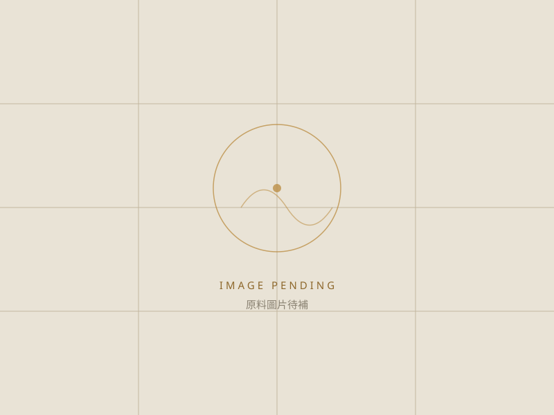

VITAMIN B COMPLEX
維生素 B 群
涵蓋 B1、B2、B6、B12 與菸鹼醯胺等。
SUPPORT BODY FUNCTIONS
基礎營養素為主的配方方向，重點在劑量搭配與錠劑體積控制。
版面示意 本頁原料資料與圖片為暫代內容，僅供版面確認；實際品項、規格與說明待百達醫提供後替換。
COMMON MATERIALS
以下列出此配方方向較常被指定的原料與其形式。實際可用品項、規格與最小採購量，會依配方設計與供應狀況調整。

涵蓋 B1、B2、B6、B12 與菸鹼醯胺等。
以酵母為載體的微量礦物質。
有一般型與還原型（泛醇）兩種規格。
游離型含硫胺基酸，水溶性佳。
DISCUSS YOUR FORMULA
提供產品訴求與預計劑型，我們會協助評估原料選項、規格與可行的配方組合。
與研發顧問討論